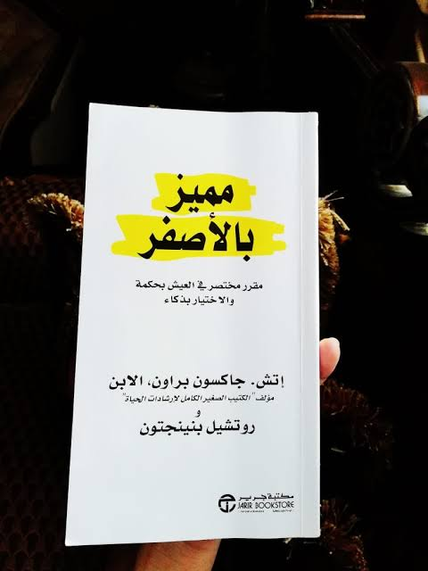

قوه عقلك الباطنالتعريف بالكتابيعتبر هذا الكتاب من بين أقوى كتب الكون انتشاراً بين القراء؛ وكتاب "قوة عقلك الباطن" يعد بحق من أمهات الكتب فلقد أفاد أكثر من مليون شخص من نصائحه الفعالة وترجم الى العديد من اللغات، كما أنه أساس أفضل برامج التسجيل السمعية مبيعاً. ويقع الكتاب في قائمة الكتب اللازم قراءتها لدى العديد من مؤسسات التجارة والأعمال حول العالم، يجمع الكتاب بين الحكمة القديمة والعلم الحديث، وبذلك لا يتسنى لك الوصول الى استبصارات جديدة فحسب بل والأكثر أهمية التقنيات الفعلية التي يمكن أن تستخدمها في الحياة وتشمل تلك الفصول الرائعة على سبيل المثال: الكنز الذي بداخلك، كيف يعمل عقلك، القوة صانعة المعجزات في عقلك الباطن، الكشف عن طريق العقل في الأزمنة القديمة، نزوع العقل الباطن نحو الحياة وعقلك الباطن شريكك في الحياة هذا الكتاب من تأليف ملخص سماعىللمشاهده اضغط هنا |
العادات السبع للناس الأكثر فعاليهالتعريف بالكتابيعد هذا الكتاب "العادات السبع للناس الأكثر فعالية"، من أكثر الكتب مبيعاً في أميركا وفي دول أخرى في العالم وذلك لما يعرضه المؤلف فيه وهو "سيتفن ر. كوفي" من معالجات شاملة متكاملة وواضحة المبدأ تساعد في حل المشاكل الشخصية والمهنية. حيث أنه يحوي على الحقيقة الصارخة حول الطبيعة البشرية والتي لا تجدها سوى في الروايات الخيالية، فهو يزخر بالحكمة العملية لهؤلاء الأشخاص الذين يتطلعون إلى أخذ زمام حياتهم وأعمالهم ومستقبلهم المهني بين أيديهم، وفي كل مرة تعيد قراءة هذا الكتاب تكتشف رؤية ثاقبة جديدة مما برهن على ما ينطوي عليه من دعوات تتميز باالعمق والرسوخ. إن المؤلف بثاقب نظره ونوادره البارزة يميط اللثام خطوة خطوة عن الطريق الموصل لحياة مفعمة بالجمال والاستقامة والأمانة والوقار الإنساني. مبادئ تمنحنا الأمان بالتكيف مع التغيير إلى جانب الحكمة والقدرة على الإفادة من الفرص ملخص سماعىللمشاهده اضغط هنا |
ابدأ بالاهم ولو كان صعباالتعريف بالكتابلأولئك الأشخاص الذين يجدون صعوبة في تنفيذ كافة المهام! يحوي الكتاب 21 طريقة ناجعة وفعالة للقضاء على التسويف والمماطلة وإنجاز الأعمال في أقصر وقت. باستخدام فلسفة "التهام الضفدع" التي تقوم على تحديد ومعالجة تلك المهام الأكثر صعوبة وغير المحببة سيتعلم القارئ كيف يخطط يومه ويحدد الأولويات ويبدأ في إنجاز المهام على الفور لينتهي منها بأسرع وقت.. الكتاب عملي جداً ومناسب لجميع الفئات والأشخاص للمشاهده اضغط هنا |

نظريه الفستقالتعريف بالكتابكتاب سيغير طريقة تفكيرك وحكمك على الأشياء. يحتوي على مجموعة مقالات تتمحور غالبا عن تطوير الذات والبرمجة اللغوية العصبية وطرق التفكير والوعي والسلوك الإنساني. للمشاهده اضغط هنا |
|

مميز بالاصفرالتعريف بالكتابهذا الكتاب عبارة عن مجموعة من القصص والاقتباسات حول بعض أغلى موضوعات الحياة، مثل: أهمية التصرف بلطف وكرم وإحسان مع الآخرين، وتوطيد علاقات قوية راسخة مع الأشخاص الذين تحبهم، واختيار توجهات ذهنية تساعدنا أثناء عيش ساعات الحياة اليومية العادية، واكتشاف معنى الرضا والإشباع النابعين من تقدير المتع البسيطة والاستمتاع بها هذا الكتاب من تأليف ملخص سماعىللمشاهده اضغط هنا |
فن اللامبالاهالتعريف بالكتابالكتاب يتحدث عن أن الانسان لا يجب بالضرورة أن يكون إيجابياً طوال الوقت وأن المفتاح إلى بشر أكثر قوة وسعادة كامن في التعامل مع الشدائد تعاملاً أفضل. يقول مانسون : "فلنكن صادقين، الشيء سيء وعلينا أن نتعايش مع هذا ولا نتهرب من الحقائق ولا نغلّفها بالسكّر، بل نقولها كما هي جرعة من الحقيقة الفجّة الصادقة المنعشة هي ما ينقصنا اليوم". يتناول الكتاب في فصوله كيفية تغلب الإنسان على عقبات حياته بطريقة منطقية بعيداً عن التهرب والخوف منها. ملخص سماعىللمشاهده اضغط هنا |
لا تكن لطيفا اكثر من اللازمالتعريف بالكتابإن السلوك المنطوي على نية حسنة ضروري للمجتمع المتراحم، ولكن له جانب سلبي، فكون الشخص لطيفاً، غالباً يعني أن يتحمل الكثير جداً، وأحيانا يكذب، ويحاول جاهداً ودائما الاقتراب من الكمال، ويقع ضحية لسلوكيات أخرى ضارة بالنفس والسلامة، ويلخص روبنسون الأخطاء التسعة التي يغفل عنها الناس اللطفاء ويفعلونها يومياً، ويبين لنا كيف نصلح هذه الأخطاء. ملخص سماعىللمشاهده اضغط هنا |
احببت وغداالتعريف بالكتابدومًا ننتظر شخصًا ما.. نظن أن بوجوده تتبدّد كافة أوجاعنا ويغمرنا السلام، ونتوهّم أننا حينها سنشعر بالاكتمال! وتصفعنا الحقيقة أن ذاك الشخص الذي رأينا فيه المنقذ... ربما هو من يمنحنا خيبتنا الكبرى.. وبدلًا من أن نزهر بجواره... قد نذبل... وننزوي... ونتلاشى.. ونذوب! يصبح الآخر جحيمنا حين نسعى لتخدير أوجاعنا عبره، وتصبح العلاقة المرضية تلاهيًا عن مواجهة أنفسنا، مجرد هروب وفرار! إلى أولئك الذين يظنون أنهم يداوون الظمأ... عبر تتبّع السراب! |